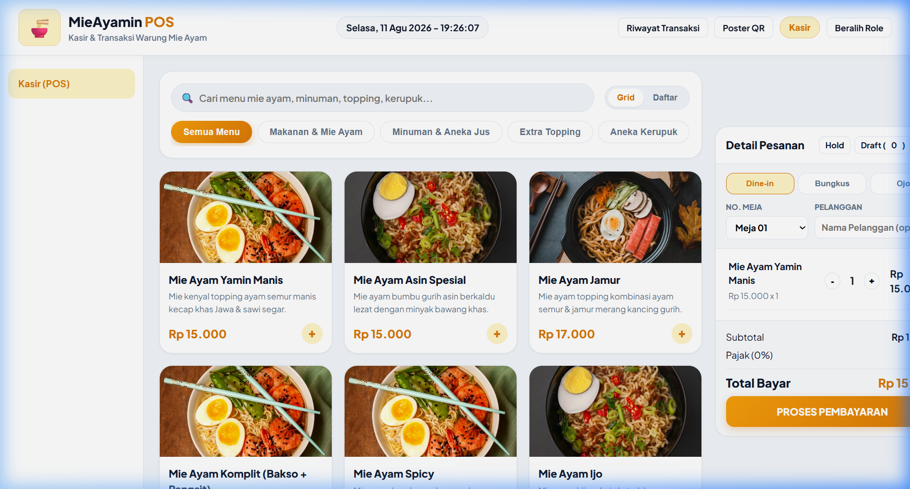
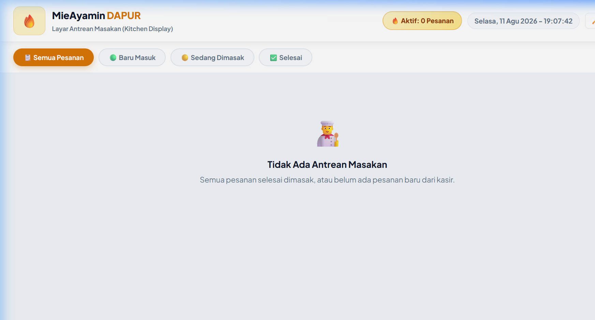
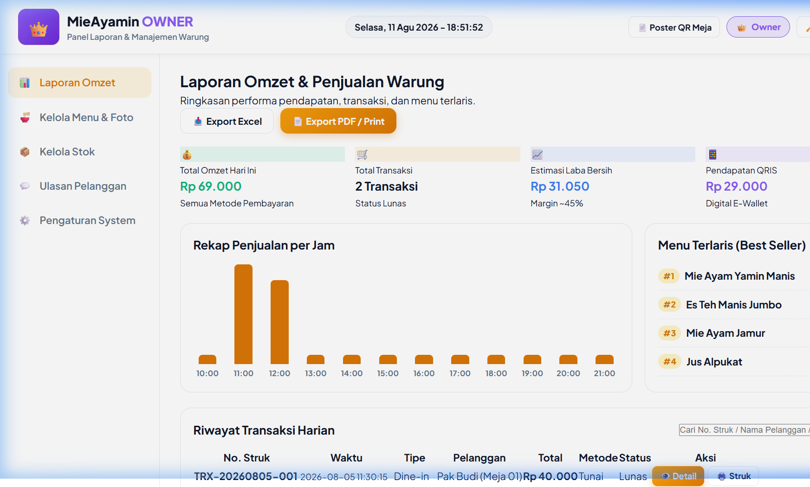

Dokumentasi Lengkap & Arsitektur Sistem
MieAyamin POS adalah aplikasi Point of Sale (Kasir) & Manajemen Operasional Warung Mie Ayam modern yang dibangun menggunakan standar teknologi Web Native (HTML5, Vanilla CSS3, JavaScript ES6+, Web LocalStorage API) — tanpa framework atau dependensi backend luar.
Aplikasi ini bersifat offline-first: semua data tersimpan langsung di browser melalui localStorage, dapat dioperasikan tanpa koneksi internet, dan mendukung fungsionalitas penuh Kasir POS, antrean Dapur (KDS), laporan omset, manajemen stok bahan baku, serta pengelolaan foto katalog produk.
c:\GALERI\POS MieAyamin/ ├── index.html # Landing Page Utama — Fokus Layar Kasir POS ├── kasir.html # Modul Utama Kasir (POS Workspace) ├── dapur.html # Modul Dapur / Kitchen Display System (KDS) ├── admin.html # Modul Owner / Admin Dashboard (Laporan Omset & Stok) ├── poster_qr.html # Printable Poster QR Code Ulasan Pelanggan Meja ├── dokumentasi.html # Dokumen Spesifikasi Ini (Siap Cetak / PDF) ├── styles.css # Fallback Design System CSS Root ├── css/ │ └── styles.css # Master Design System — Amber Gold POS Design Tokens ├── js/ │ ├── storage.js # Shared State Manager, LocalStorage API, Web Audio Synthesizer │ ├── kasir.js # Logika Transaksi Kasir, Cart, Hold/Draft, Checkout Payment │ ├── dapur.js # Logika Antrean Dapur KDS, Live Timer, Sound Notif │ └── admin.js # Analytics Omset, Kelola Stok, Kelola Foto Menu └── images/ # Aset Foto Produk Visual (PNG) ├── mie_yamin_manis.png ├── mie_ayam_komplit.png ├── es_teh_jumbo.png └── es_jeruk_peras.png
Modul utama aplikasi. Halaman ini adalah layar pertama yang terbuka ketika aplikasi diakses. Berfungsi sebagai antarmuka pencatatan pesanan, pembayaran, dan pengelolaan transaksi kasir warung.

Semua Menu | 🍜 Makanan & Mie Ayam | 🍹 Minuman & Aneka Jus | 🍢 Extra Topping | 🍿 Aneka Kerupuk/ atau F2.⏸️ Hold untuk menahan pesanan aktif dan 📋 Draft untuk memuat kembali pesanan sementara kapan saja.🍽️ Dine-in, 🛍️ Bungkus, dan 🛵 Ojol pada setiap pesanan.🔑 Beralih Role di header untuk pindah ke Mode Dapur (KDS) atau Mode Owner (Admin PIN 9999).Kitchen Display System untuk area dapur warung. Secara otomatis menerima pesanan baru dari Modul Kasir melalui localStorage dan menampilkannya dalam antrean masakan real-time.

#0f172a) kontras tinggi, optimal untuk layar area dapur yang terpapar cahaya berlebih.⏱️ 04:15).Menunggu ➔ Sedang Dimasak ➔ Selesai ✅Panel manajemen bisnis yang dilindungi PIN keamanan. Digunakan oleh pemilik warung untuk memantau performa bisnis, mengelola stok bahan baku, dan mengatur katalog menu beserta foto produk.
9999js/admin.js dan js/kasir.js.

⚠️ Stok Menipis otomatis jika sisa stok < MinStock.− Qty +) untuk mengubah stok langsung dari tabel.+10 untuk penambahan cepat 10 unit.➕ Tambah Menu Produk Baru: Menambah produk baru beserta nama, kategori POS, harga, deskripsi, dan foto (via URL atau upload).📷 Edit Foto: Mengubah foto produk mana pun secara langsung.| Token Warna | Kode HEX | Penggunaan |
|---|---|---|
--primary | #d97706 | Warna utama aksen Amber Emas — tombol, harga, border aktif. |
--primary-gradient | #f59e0b → #d97706 | Gradien tombol CTA utama. |
--bg-canvas | #f1f5f9 | Latar belakang kanvas aplikasi. |
--bg-card | #ffffff | Latar belakang kartu menu & panel. |
--text-main | #0f172a | Teks utama (judul, harga, nama menu). |
--success | #10b981 | Status selesai, uang pas, sisa stok aman. |
--danger | #ef4444 | Status urgent, stok menipis, timer merah KDS. |
| Elemen | Font / Weight | Ukuran |
|---|---|---|
| Font Family Utama | Plus Jakarta Sans (Google Fonts) | — |
| Brand Header | 800 ExtraBold | 1.3rem |
| Nama Menu | 800 ExtraBold | 1.0rem |
| Harga Menu | 800 ExtraBold | 1.1rem |
| Teks Body | 600 SemiBold | 0.9rem |
Storage Key: mieayamin_pos_v2_data — Seluruh data tersimpan di window.localStorage browser tanpa server.
| Properti Data | Tipe | Keterangan |
|---|---|---|
cart | Array of Objects | Item belanjaan aktif di keranjang kasir saat ini. |
transactions | Array of Objects | Riwayat seluruh transaksi pembayaran yang telah selesai. |
kitchenOrders | Array of Objects | Antrean pesanan masakan aktif di layar Dapur (KDS). |
draftOrders | Array of Objects | Pesanan yang disimpan sementara (Hold orders). |
stock | Object Map | Persediaan stok bahan baku beserta nilai minimum stok. |
customMenu | Array of Objects | Katalog menu kustom beserta harga dan URL foto produk. |
9999)Buka file js/admin.js dan js/kasir.js, cari teks '9999' dan ganti dengan PIN baru Anda.
📷 Edit Foto atau ➕ Tambah Menu.images/, lalu update properti image: 'images/foto_baru.png' pada DEFAULT_MENU di js/storage.js.Tambahkan tombol tab baru di kasir.html / index.html:
<button class="cat-tab" data-cat="snack">🍟 Aneka Snack</button>
Lalu tambahkan produk dengan properti cat: 'snack' pada DEFAULT_MENU di js/storage.js.
npx serve . # Buka di browser: http://localhost:3000